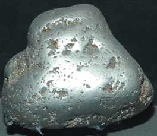

Platinum
Platinum is a grayish-white precious metal. Platinum metal is rare in nature, but the nugget at right was found in the Urals of Russia. Platinum rivals gold in value and is used for jewelry. It is very ductile and can be welded at red heat. It is used in high temperature metal alloys. It has a very small amount of chemical activity and as a result is used for electical contacts under corrosive laboratory conditions. |  |
Platinum has important applications as a catalyst for speeding many chemical reactions. Both in the form of platinum sponge and as a fine powder called platinum black it is used for a catalyst in commercial chemical applications. It is used in automobile catalytic converters.
Platinum wire is useful for making up standard electrodes for electrochemical cells, and is the substrate of choice for examining the flame colors produced by metal ions since it does not contribute a significant amount of color in the flame.
One of the most reproducible low temperature thermometers is the platinum resistance thermometer.
One platinum containing mineral is sperrylite, PtAs2.
|